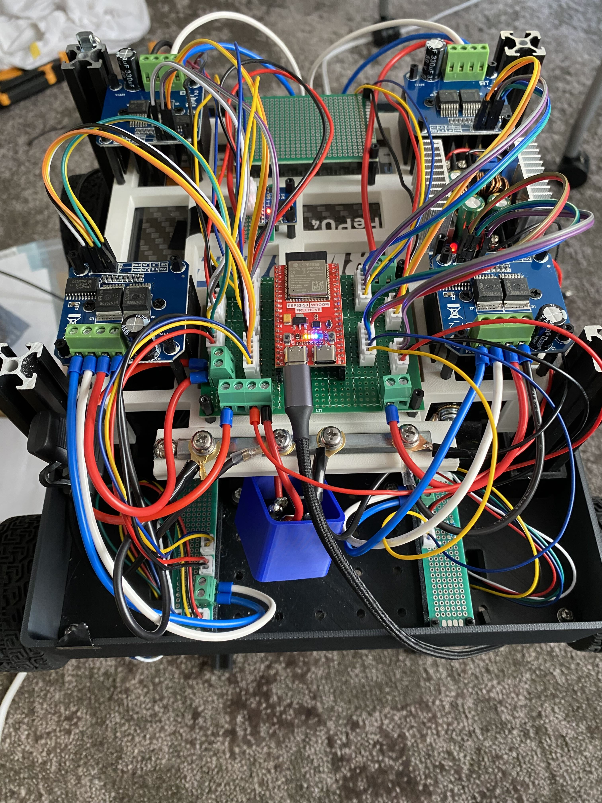
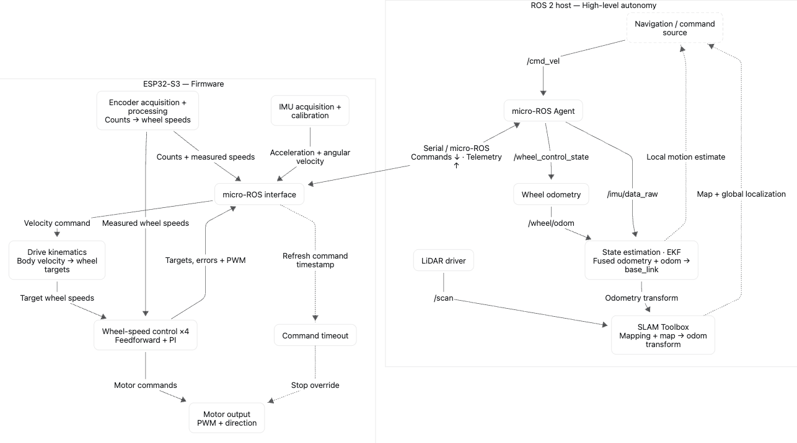
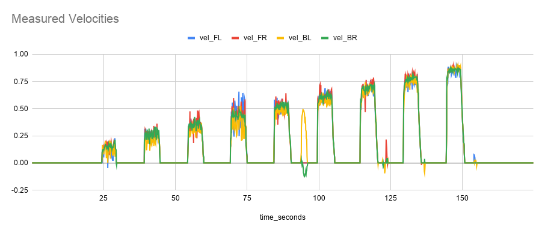
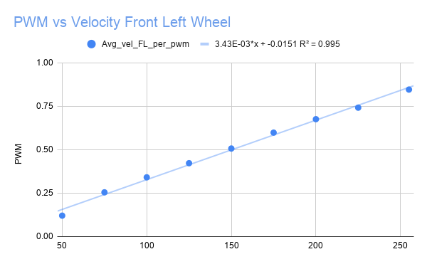
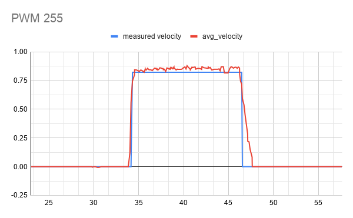
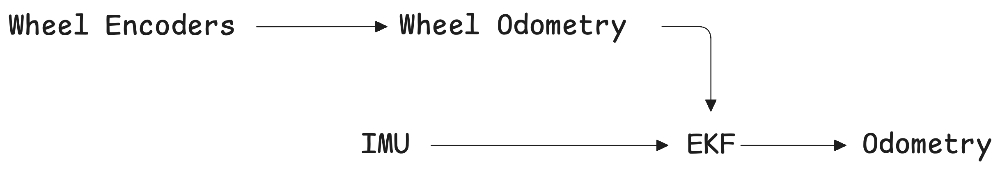
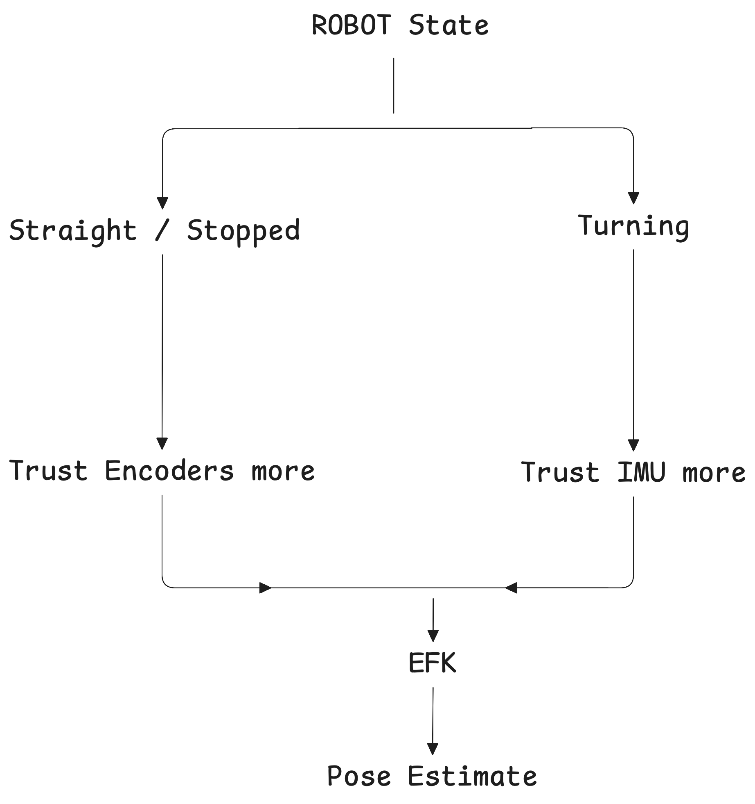
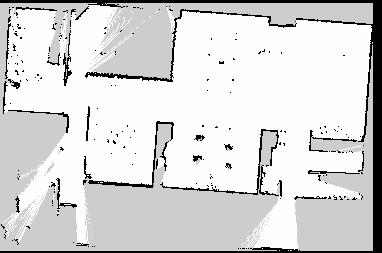
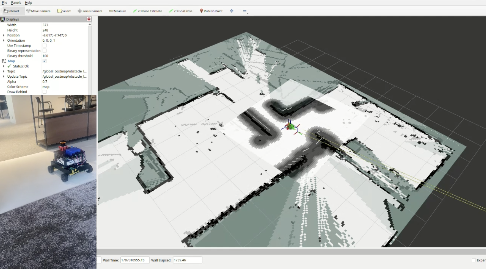
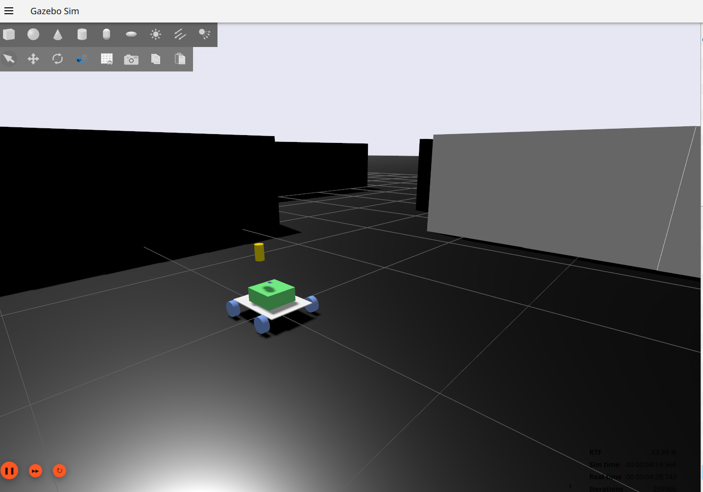

Autonomous Mobile Robot
Four-wheel autonomous rover integrating embedded motor control, sensor fusion, LiDAR SLAM, and autonomous navigation using ROS 2.
ROS 2 • C++ • ESP32 • NVIDIA Jetson • micro-ROS • Control Systems • Sensor Fusion • SLAM

Summer 26 Internship at Godot
As part of my internship I built, from scratch, a four-wheel skid-steer mobile robot platform capable of mapping and autonomously navigating indoor environments.
The system was a part of a larger project where I worked with two other interns. The project motivation was to create something which would allow the company’s local LLM to interface with the real world. To achieve this we wanted the voice AI to have a facial projection system where it would be able to react to its own voice and the voices of others to allow for more natural communication. We also wanted the projection system to sit at eye level with employees at the office while sitting down. This involved designing a cad assembly which acted also as the body of the platform. Then finally, I developed the rover platform which were the perviable legs of our system, allowing it to move around the office on its own terms, and when finished docking itself in a self charging station.
My work spanned embedded firmware, motor control, wheel odometry, sensor fusion, ROS 2 system integration, simulation, SLAM, and autonomous navigation. On the hardware side I wired all components, created circuit boards and made ki cad schematics for future iterations with custom smd PCB’s.
System Architecture

I divided the system into two computational layers. The ESP32 handles time-sensitive hardware interaction and closed-loop wheel control, while the Jetson runs computationally heavier ROS 2 applications including localization, mapping, and navigation. micro-ROS bridges the microcontroller into the ROS 2 network, allowing the higher-level software to command the drivetrain and consume sensor and control telemetry.
Placeholder: Explain why computation was divided between embedded hardware and a higher-level computer, and how the subsystems communicate.
Placeholder: Discuss alternatives considered and the tradeoffs behind the eventual division of responsibilities.
Closed-Loop Motor Control



Problem
Each wheel is independently velocity-controlled using encoder feedback. Incoming robot velocity commands are converted into target wheel velocities, while encoder measurements provide the actual wheel velocities.
I implemented a PI + feedforward controller that combines feedback correction with an estimate of the PWM required for the requested wheel speed. The control loop runs at 100 Hz on the ESP32 and produces the PWM commands sent to the motor drivers.
One challenge was differing sensitivity in the encoder boards. To account for this, I spun each wheel 12 times and found its unique average ticks for a revolution. These conversions were then used to run the rover over different PWM values while recording velocity. For each wheel I took the slope of its PWM vs velocity graph to convert from target velocity to feed forward PWM value.
Localization & Sensor Fusion


Noisy and Inaccurate Odometry
Due to the skid steer nature of the rover, during turns, especially sharper ones, the encoder values are wildly inaccurate. Therefore to accurately capture turns in the rover we needed to give the IMU a much heavier weight when feeding into the EFK (Extended Kalman Filter). However this led to another problem, the IMU is noisy. Even when stationary it will register movement and over time lead to drift. This was a an issue because we planned to implement a self docking mechanism for the charging station which required centimeter if not milimeter precision.
I tried several strategies the first was to aggresively smooth the IMU values. However there was still noise causing the rover to drift. To overcome the persistent noise from the IMU, I implemented dynamic sensor fusion. The covariance values for the IMU and wheel encoders change depending on how much of a turn is detected. The larger the turn the more the IMU is trusted and the wheel encoders are distrusted and vice versa. This is implemented by altering the covariance values that feed into the EKF. Lower values mean less variance and the more the EKF trusts it.
SLAM & Autonomous Navigation
Achieving SLAM was a major milestone in the project. It marked the relative completion of the lower level controls which could be smoothly controlled by keyboard controls which were smoothed out to match joystick commands to avoid the jerky movement first provided by ros2 keyboard teleop. By this point, we had a fully working rover with +-4 accuracy in its odoemtry. This meant we could accurately enough estimate pose such that the on board lidar could correct any necessary adjustments allowing for a smooth map. Implementing SLAM was the simplest part, I used the SLAM_toolbox, a ROS2 package.


Simulation & Validation

I developed a ROS 2/Gazebo software-in-the-loop environment using the same URDF, TF structure, and ROS interfaces as the physical rover. Gazebo's differential-drive model accepted /cmd_vel commands while ros_gz_bridge connected simulated motion and odometry back into the ROS 2 stack. The environment was intended to validate localization, SLAM, and navigation software independently of the rover's embedded hardware.
The simulation was most useful for verifying system architecture and ROS integration, but its value was limited by the rover's four-wheel skid-steer drivetrain. Real behavior was heavily influenced by wheel slip, tire scrubbing, motor asymmetry, friction, and encoder error that a simplified differential-drive physics model did not reproduce accurately. As development progressed, I therefore used simulation primarily for software validation, or more so fault isolation while relying on hardware testing for drivetrain, control, and odometry performance.
Future Iteration
For a future iteration I would begin by designing custom PCB’s with smd components instead of relying on breakout boards. I would start with modular designs to allow for rapid prototyping for first iterations of each major component such as the IMU, and motor drivers. However eventually I would explore simplifying everything into a single PCB, as to decrease complexity and allow a path for volume production of the rover.
A part of the project left unfinished that I would like to complete was the computer vision side of the rover. The ambition from the start was to use a RGB-D camera for a self docking station using an april tag, as well as more robust object tracking and detection. The camera would also be used for facial recognition so the LLM would be able to remember people it has had conversations with.